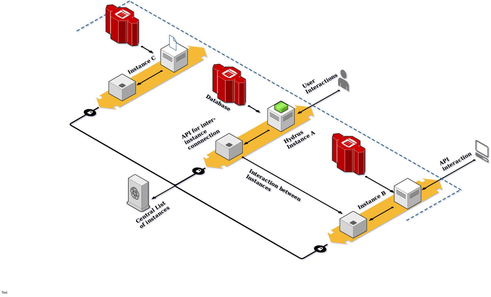

Introduction
The Hydrus server and it’s associated packages as of now are at a stage where they apply most of the Hydra draft documentation framework, but the suite still needs a lot of work to make it usable in the production environment.
The proposed project is aimed at adding functionalities to hydrus and the hydra-openapi parser. As a main focus, building support for various other APIDoc specs/languages to the HydraAPI spec documentation for use by hydrus or other components of the package, adding HTTP/2 and asyncio support to Hydrus as well as making necessary changes to the core package and updating it to use the latest specs of Hydra. I would also like to contribute by adding to the general Hydra Ecosystem of packages, making updates to hydrus as pointed down below.
Project Goals
- The hydra-openapi-parser only supports OpenAPI 2.0 features, that needs to change as the latest version of the OAS spec(v3.0) is brought in with support for new features in the updated Documentation format for conversion into HydraDoc
- Support can also be further extended to RAML within the parser. This has to be best achieved in a fashion that makes the parser framework agnostic.
- Hydra Draft has seen some changes that have not been updated onto Hydrus, it is a goal to update hydra-python-core to implement these changes
- Implementation of the HTTP/2 protocol by porting the application from flask to quart, making use of asyncio.
- Building an example real-world-app implementation making use of all of the Hydra Ecosystem of packages to demonstrate its capabilities.
Implementation Plans
Some means through which I propose to achieve my project goals include, but are not limited to: - Implement the OpenAPI-Core validator as pointed out in hydra-openapi-core#6. Thus ensuring that all OAS specifications passed to the parser are validated before parsing. - Make use of the idea behind api-doc-parser to build a better cross Spec parser so that even RAML(as pointed out in hydrus#285 by @soderluk) and other frameworks are supported. Add support for version 3.x of OAS(currently at Swagger 2.0). - Update hydra-python-core(#15) as pointed out by @chrizandr, to make use of a current version of the Hydra documentation specification.
All of the above will be achieved in the first phase of the project. In the second phase I’d like to implement the following: - Build a network of federated servers that implement a social media blogging platform similar in UI to Medium and having interoperability functionalities similar to that seen in the Twitter clone mastadon.social that allows it to be a part of a larger social media chain of servers with feeds that are cross instances and distributed in nature. This implementation utilises many features of Hydrus for the purpose of interoperability and federation of the service among the various instances that are basically hydrus based servers.
Also in the second phase simple fixes and other additions I’d like to make in hydrus and its associated packages are listed below:
- Add a simple --load option to the Hydrus CLI(hydrus#167) to initialize the server with data in JSON/CSV format
- Add support for Push notifications(hydrus#300) as suggested by @Mec-iS. This can be achieved with HTTP/2 support, also making the flask implementation currently in use within hydrus make use of asyncio using quart(hydrus#372) to call the Flask API.
- To build on this a network making use of a Merkle-DAG to maintain a ledger of changes to the data can also be implemented to keep track of data changes and notify each and every instance of a change. This helps client from making use of stale data.
Adding RAML and improving Open API (v3) Support
The OpenAPI Specification(OAS) as a documentation framework for REST APIs, allows both human and computer based discovery and understanding of the capabilities of a service without requiring access to its implementation or any specific human readable documentation. Hydra and OAS can be considered as sibling specifications with similar objectives, but implemented differently. OAS is quite extensive whereas hydra is lightweight. OAS has a sizable user-base, thus requiring users to port their documentation to Hydra is detrimental to the project. Similarly RAML is a documentation framework that needs to also be supported due to its.
We need to focus on improving the hydra-openapi-parser to make it full-featured, allowing users of OpenAPI, RAML or any other supported API documentation framework to experiment with and to use Hydrus in their projects, thus making the barrier to entry easier for those wanting to use it.
Improving Hydrus
A manner of adding data to the Hydrus database without making PUT requests, instead using a simple --load option to load the data from a simple JSON/YAML/CSV
file is to be added to the Hydrus CLI. Moving to quart over flask calls where possible to implement asyncio can make Hydrus better with handling load as it will move to making use of the event loop method instead of the current sequential flow of control within Flask.
This will also help implement HTTP/2 and make it possible to create a push notification mechanism to notify clients of changes made to data from one of the client nodes. This network must be signalled and managed from the centralized Hydrus instance that implements a checking mechanism similar to that in git servers utilising a simple Merkle DAG.
Hydrus Real World App
The future of the web is made with federated/distributed networks instead of a centralized approach to data storage and retrieval. A new suite of apps are on the rise that make use of network of different servers that are running instances of the same kind. I propose to build a Real World App such as the one suggested in the hydrus-real-world-app#1 that implements a federated clone of the Medium blogging platform.

As is clear from the above diagram I would like to implement a distributed social media blogging platform similar to Medium. It will contain multiple instances of Hydra enabled servers that are interconnected through inter-instance communication APIs that allow for a quick and easy interconnect between the instances on the network. This is further augmented by the addition of a UI on top of hydrus based back-end that allows for the direct user interaction with service. The API can also be consumed by various other clients.
As an example, the user might be looking for a data object stored in instance C and is currently accessing the service through instance A. The service will look for the file first within itself and making use of the **Central list ** find the instance C and provide the data. This can be helpful in cases where data is stored on an instance other than the current and needs to be accessed without leaving it through a hyperlink.
In a similar use case the data(eg: weather bot info) might be coming from an API that is accessing Instance B and the user might be availing this data through their own feed as a forecast. The federated network helps the user to make use of the network to make and edit the document the data(blog article) on one instance and to later access it from another where both can be just automated bots sharing documents such as scans or transcripts. The data remains human Understandable/Readable.
Schedule
GSoC spans a duration of almost 4 months, with an initial community bonding period continued by 12 weeks of work on the allotted project, thus I would schedule my contributions in such a way that I can make full use of the allotted time.
Start Implementing changes as proposed on OpenAPI parser (May 6-27, community-bonding period)
- Add validation and other proposed components.
- Separate the functionalities into different classes/modules.
- Write documentation for the parser.
- Unit testing and debugging the code.
Plan and finalize the implementation of RAML~>Hydra parser. (Mid May, community-bonding period)
Implement plan for a RAML~>Hydra parser.(End May-Early June)
- Make use of learnt concepts from Simple RAML<~ Hydra parser to build a RAML~>Hydra parser.
- Run tests by converting RAML sample code to HydraDoc.
Integrate the RAML and OAS parsers into a single library. (Mid June)
- Make necessary changes to the parser to support both OAS and RAML.
NOTE: I will be writing my Semester ending exams during the period of Early-Mid June, but would like to continue contributing. Hence balancing off the load early.
- Make necessary changes to the parser to support both OAS and RAML.
Building the example Real World App with Hydrus in a federated manner
- Build facility to demonstrate interactions with multiple Hydrus instances and with Dynamic API Paths (June End)
- Create an interactive Medium like UI (July)
Federation of instances of the Real World App (July)
- Multiple instances connected together through Hydra API.
- API end-points(paths) providing various capabilities.
This is the hard part that I need to learn more about how to implement.
Implement HTTP/2 by porting hydrus to Quart. (Early August)
- Make sure everything is working as is required with Hydrus.
- Add push notification as noted.
Test, debug and finish pending work (if any).
Submit (August 19)
About Me
- I have been working on bringing various organisation at my college together to open-source their code, be it simple websites or complex apps to solve unique problems they have. I have also spoken at a FOSS conference on subject matter.
- I have been certified by NPTEL as a Gold medallist(Elite certificate)) in a Python based programming course. Otherwise I have been using Python since school while real interest has only developed lately.
- Last year I worked on a Python/Django web-app called rescuekerala(my first real life collaborative work), which was built during the floods in Kerala, India. We didn’t focus much on the APIs as we only did a single JSON data-dump. I had a real interest in working on the same due to which we built an iteration called OpenSalve that made use of definite end-points instead.
- I would love to work on a W3C related project. My dream career involves working with IETF like organisations and that is one reason why I am an IEEE/ISOC Student Member. I am still not really a good engineer, but I would like to make use of this opportunity and am willing to continue contributing to the project, even if not selected.
{kind=link}
Email: devdutt@ieee.org
Telegram: @devduttshenoi
GitHub: @de-sh
Country: India
Time Zone: GMT +5:30
Update: 6 May 2019 11:45
It was a refreshing experience to have written such a detailed proposal, sadly this project was not selected for a scholarship. I should have devoted more time and research, University timings also don’t match well with the expectations of GSoC, so not being selected was maybe a boon in itself. I hope to participate again in the next edition with this learning experience. Meanshile I hope to develop myself technically.
- Selected Projects under Hydra Ecosystem
- Aswin M Prabhu’s Proposal that was selected, he is a friend.